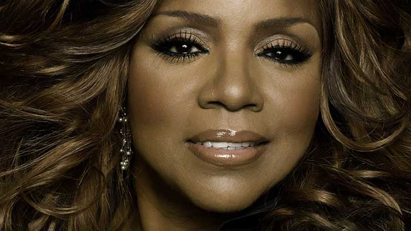
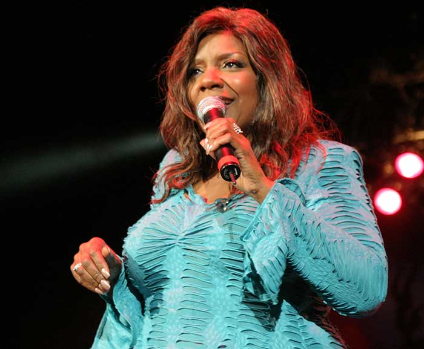

GLORIA GAYNOR
Disco

Le disco est un genre musical et une danse apparu aux États-Unis au début des années 1970. La musique disco est le résultat d'un mélange de funk, de soul et de pop, enrichi par de nouveaux instruments, les synthétiseurs et parfois une orchestration comprenant des cordes et des cuivres. La musique disco est caractérisée par un rythme binaire de tempo assez rapide (autour de 120 battements par minute), les pulsations étant marquées par la grosse caisse sur chaque temps de la mesure 4/4. Très souvent les contretemps sont soulignés par le piano. À l'origine, le disco se joue principalement dans les discothèques avec l'invention des maxi 45 tours appelés aussi 12 inch.
En 1972, le groupe "Barrabas", hispano-américain, contribue à l'émergence du disco avec un titre comme Woman. Au début des années 1970, dans les discothèques de New York (dans les quartiers de Brooklyn, du Bronx et d'Harlem), les disc-jockeys sélectionnent des chansons soul ou funk peu connues pour leur capacité à faire danser le public. Il remixent parfois certains titres en studio, pour faire ressortir la batterie et la basse et mieux rythmer la danse; c'est le disco mix. La majorité des titres disco restent ainsi expérimentaux.

Il s'agit en plus de trouver le bon tempo, la phrase de guitare qui va attraper l'oreille, d'habiller le rythme dansant de cordes ou de voix, d'allonger la durée des morceaux, d'accrocher l'oreille et le pas de danse par un motif cyclique. Le disco est né d'une stylisation du son de Philadelphie adaptée au marché blanc (les trois-quarts du marché aux États-Unis). A New York et à Miami, c'est grâce aux discothèques et aux radios que le disco démarre et triomphe. Ensuite des artistes comme les Village People ou Cerrone se produiront sur des grandes scènes, à l'image des artistes rock et funk qui les ont précédés.
La naissance du proto-disco a plutôt lieu en 1973 avec Love's Theme, morceau non-chanté du Love Unlimited Orchestra (nº1). Cette même année sort aussi Soul Makossa de Manu Dibango. En 1974 trois titres font date : Rock Your Baby de George McCrae, Rock The Boat de The Hues Corporation et surtout Never Can Say Goodbye de Gloria Gaynor. Dans leur sillage on trouve You're The First, My Last, My Everything de Barry White et Doctor's Orders de Carol Douglas. Apparaît aussi le personnage-clé du remixeur comme Tom Moulton qui a remixé des milliers de titres et qui est à l'origine de plusieurs innovations comme la version allongée et les chansons mixées en continu (ce qu'il a fait avec Honey Bee, Never Can Say Goodbye et Reach Out I'll Be There sur le premier album de Gaynor). Ceci l'a aussi amené à créer le format du «12" single», maxi 45 tours ou maxi 33 tours.